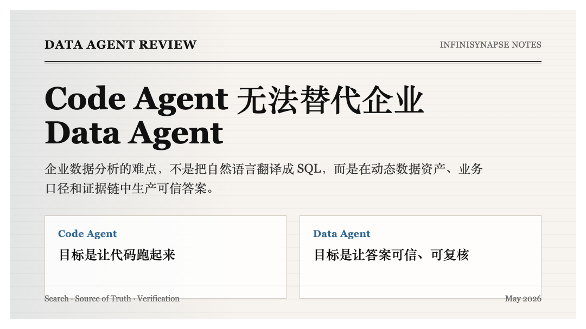

最近看了 Databricks 的一篇关于 Data Agent 的文章，感触很深。
过去一年，很多人开始用 Claude Code 、 Codex 、 Cursor 这类 Code Agent 分析 Excel 。拖一个表进去，让 Agent 写 pandas ，做 EDA ，画图，生成 HTML dashboard 。效果确实很好。再往前走一步， Code Agent 甚至可以通过工具连接多个数据库，写 SQL ，跑查询，再把结果组织成报告。
于是很多人会问：
Code Agent 已经能分析 Excel ，也能连数据库了，为什么还需要专门的 Data Agent ？
这个问题的误区在于，它把数据分析理解成了“写代码处理数据”。
但企业数据分析真正要解决的不是“代码能不能跑”，而是：
Code Agent 的目标函数是“把代码写出来，并让它跑起来”。
Data Agent 的目标函数是“在混乱、动态、语义密集的企业数据系统里，生产可信答案”。
这两个目标函数一旦进入企业现场，就会彻底分叉。
Databricks 在 2026 年 5 月 8 日发布了《 Pushing the Frontier for Data Agents with Genie 》。这篇文章不是在讲一个普通的 Text2SQL demo ，而是在讲企业级 Data Agent 为什么是一个独立问题。
Genie 面向的不是单个 CSV ，也不是一个孤立数据库，而是整个 Lakehouse 里的结构化和非结构化资产：
文章里有一个很重要的结果：在 Databricks 内部真实数据分析 benchmark 上，加入 specialized knowledge search 、 parallel thinking 和 Multi-LLM 之后， Genie 相比领先 coding agent ，准确率从 32% 提升到 90% 以上。
这当然是 Databricks 自己的内部实验结果，不能直接当成全行业通用指标。但它至少说明一件事：
企业数据分析问题不是“让模型多写几行 SQL”就能解决的。它需要搜索、语义、推理、执行、验证和成本控制一起进入系统设计。
Databricks 文章把 Data Agent 相比 Coding Agent 的独特挑战概括成三个。我认为这三个挑战，正好解释了为什么 Code Agent 无法解决企业数据分析。
Code Agent 面对代码库时，虽然也要处理很多文件，但代码世界至少有比较稳定的组织方式：
它可以用搜索、跳转、依赖分析和测试反馈来逐步理解一个工程系统。
企业数据不是这样。
一个中大型企业的数据资产可能包括：
这些资产不只数量大，而且结构不统一、命名不一致、质量参差不齐。
用户问：
为什么两个收入 dashboard 的峰值日期不一样？
真正相关的信息可能分散在：
普通关键词搜索很容易失效。因为用户问的是“收入”，但表名可能叫 rev_recognition_fact， dashboard 里可能写的是 ARR，文档里可能写的是“确认收入”，财务口径里又可能叫“净收入”。
Code Agent 如果只是在文件系统或数据库 schema 上做搜索，很容易找到“看起来相关”的资产，而不是“真正应该信任”的资产。
这就是 Databricks 说的第一个挑战：数据资产规模巨大，传统搜索方法会被打破。
企业 Data Agent 的第一能力不是写 SQL ，而是找到相关数据资产，并判断它们之间的关系。
第二个挑战更难。
找到资产只是开始。真正的问题是：哪个资产才是 source of truth ？
企业里经常出现这种情况：
status，但不同业务线含义不同；Code Agent 在这类场景下很容易出错，因为它擅长的是“用已有上下文继续写代码”，不是“判断企业知识资产的权威性”。
如果它看到一个字段叫 gmv，它很可能直接拿来用。看到一个 dashboard 叫“收入看板”，它可能默认这是正确口径。看到一个文档解释了指标，它可能直接引用。
但企业数据分析里，最危险的不是代码报错，而是：
代码没报错，数字也算出来了，但用的是错口径。
这种错误最难发现，因为它长得很像正确答案。
一个真正的 Data Agent 必须能处理动态业务知识：
所以 Data Agent 不只是查数据。它还要判断数据和知识的权威性。
这也是 InfiniRAG 在 InfiniSynapse 里如此重要的原因。
Code Agent 有一个很大的优势：它通常可以靠测试闭环。
写完代码后，可以跑：
测试失败， Agent 修。测试通过，至少可以说明它满足某种明确规格。
Data Agent 没有这么幸运。
用户问：
上季度华东收入为什么下降？
这里没有一个单元测试告诉 Agent 答案是否正确。
甚至问题本身就有很多隐含前提：
更麻烦的是，有些问题本来就不可回答。
比如缺少关键数据源，或者不同系统的口径无法对齐，或者历史数据在某个时间点发生过断裂。一个好的 Data Agent 必须能说：
目前数据不足以支持这个结论。
Code Agent 的默认习惯却是继续往前写代码，尽量产出一个结果。
这就是 Data Agent 的第三个挑战：缺少像代码测试那样的 oracle 。
因此， Data Agent 的可靠性不能只靠“模型聪明”。它必须靠系统设计来补：
这已经不是 Code Agent 的能力边界，而是另一类系统。
现在我们回到开头的问题：
为什么 Code Agent 不能解决企业数据分析？
因为 Code Agent 面对的世界，和 Data Agent 面对的世界不一样。
| 维度 | Code Agent | Data Agent |
|---|---|---|
| 工作环境 | 代码库、文件系统、测试框架 | 动态企业数据现场 |
| 主要对象 | 代码文本和工程依赖 | 表、字段、指标、文档、 dashboard 、历史分析 |
| 成功标准 | 代码能运行，测试通过 | 答案可信，口径正确，过程可复核 |
| 反馈机制 | 报错、测试失败、构建失败 | 业务校验、证据链、口径一致性、不确定性表达 |
| 主要失败 | 不编译、测试不通过、行为错 | 找错表、信错口径、算对但解释错 |
Code Agent 可以通过不断改代码逼近可运行状态。
Data Agent 不能只靠不断改 SQL 或 Python 逼近可信答案。
因为数据分析里的错误，很多时候不是语法错误，也不是运行错误，而是语义错误。
语义错误不会抛异常。
它会安静地生成一个看起来很专业的错误报告。
为什么这种误解会这么普遍？
因为 Code Agent 确实能做一些数据任务，而且效果很好。
典型场景包括：
这些场景有一个共同点：数据规模小、上下文单一、风险有限、验证成本低。
它们可以临时包装成编程问题。
但企业数据分析不是这样。
真实企业分析通常是连续追问：
Code Agent 的默认方式是不断修改代码。
第 3 步加一个 DataFrame 。第 5 步加一个 merge 。第 7 步连另一个数据库。第 9 步改过滤条件。第 10 步把前面的逻辑揉成最终脚本。
代码会越来越大。变量会越来越多。中间逻辑会被覆盖。 Agent 的注意力开始从“业务问题”转移到“工程问题”：
最后代码可能能跑。
但企业要的不是“能跑的代码”，而是“可信的分析”。
复杂代码本来就是反人类的。对人类难读，对 Agent 也难维护。尤其在数据分析里，探索过程被不断修改后，中间证据很容易消失。
企业最关心的问题反而回答不了：
所以，“Code Agent 能分析 Excel”是真的。
但“Code Agent 因此能解决企业数据分析”是假的。
InfiniSynapse 对这个问题的第一个回答，是 InfiniSQL 。
InfiniSQL 不是为了发明一种更炫的 SQL 方言，而是为了给 Data Agent 一门适合 Agentic 分析的工作语言。
看一段最简单的例子：
select region, sum(amount) as revenue
from orders
group by region
as region_revenue;
select *
from region_revenue
where revenue < 0
as abnormal_region_revenue;
这段代码不应该被理解成“一次写完的脚本”。
它更像 Agentic 工作流里的两次工具调用。
第一次工具调用产出 region_revenue，把原始订单明细抽象成“按地区汇总后的收入表”。
第二次工具调用直接基于 region_revenue 继续分析，筛出异常地区，产出 abnormal_region_revenue。
这里最关键的不是 SQL 本身，而是每次工具调用的结果都可以被下一次工具调用使用。
随着工具调用次数变多， InfiniSQL 的 session 里会逐渐沉淀出一批经过探索、清洗、聚合和命名的中间表：
region_revenue；abnormal_region_revenue；east_customer_detail；refund_adjusted_revenue；campaign_revenue_bridge；final_business_readout。这些表共同形成一个面向当前问题的“虚拟数仓”。
这个虚拟数仓不是数据团队事先建好的，也不是一个静态 schema 。它是在 Agent 分析过程中自然生长出来的。
越往后， Agent 越不需要回到原始明细表重新理解一切。它可以站在已经高度抽象、已经带有业务语义的中间表上继续分析。
这和 Code Agent 不断改 Python 脚本完全不同。
在 Python 里，追问越多，代码越复杂。
在 InfiniSQL 里，追问越多，虚拟数仓越丰富，后续分析越容易。
这就是 Agent 友好语言的意义。
它让 Agent 把注意力放在“下一步应该分析什么”，而不是“我刚才的 DataFrame 变量叫什么”“这段代码会不会覆盖前面的结果”“这个包的 API 版本对不对”。
企业数据不可能只在一个地方。
一个看似普通的问题，可能同时涉及：
Code Agent 的自然做法是把这些数据拉到本地，变成 DataFrame ，再 merge 。
这在 demo 里没问题，但在企业里会立刻遇到几个风险：
InfiniSQL 的方式是让不同数据源在同一个 session 里以表的形式共存：
connect jdbc where url="mysql://..." as mysql_biz;
connect jdbc where url="postgresql://..." as pg_ops;
load jdbc.`mysql_biz.orders` as orders;
load jdbc.`pg_ops.customers` as customers;
load excel.`/data/campaign.xlsx` as campaign;
select o.order_id, o.amount, c.level, campaign.channel
from orders o
left join customers c on o.customer_id = c.id
left join campaign on o.campaign_id = campaign.id
as order_customer_campaign;
Agent 不需要变成数据工程师。
它不需要自己处理驱动、分页、缓存、内存、临时文件和跨源 merge 。它只需要表达业务关系，引擎负责执行细节。
这对企业数据分析非常关键。
因为 Data Agent 的任务不是展示自己会写复杂代码，而是稳定地推进分析。
Databricks 提到的第二个挑战是 source of truth 。
InfiniSynapse 对这个挑战的回答，是 InfiniRAG 。
很多人把 RAG 理解成“检索几段文档塞进上下文”。这对企业数据分析远远不够。
企业里的业务知识不是装饰性上下文，而是分析本身的一部分。
数据库只能告诉 Agent 发生了什么。
知识库告诉 Agent 这件事意味着什么。
比如数据库里有一个字段叫 metric_key，它可以告诉你：
PAGEVIEW 出现了多少次；DOWNLOAD 出现了多少次；download:tool:windows:x64:agent_excel 出现了多少次。但它不能可靠告诉你：
DOWNLOAD 是下载意图，还是确认安装；agent_excel 属于 Office 自动化，还是文件处理；这些知识通常存在于：
InfiniRAG 要解决的不是“让模型看到更多文字”，而是让这些知识变成 Agent 分析过程中的可调用能力。
严肃的 Data Agent 应该能在写 SQL 前先问知识库：
然后再用 SQL 去验证可计算事实。
这就是结构化数据和非结构化知识的互补式绑定。
结构化数据负责事实计算。非结构化知识负责业务解释、口径边界、历史经验和偏好约束。
两者分开， Agent 只是会查数。
两者绑定， Agent 才开始像分析师。
Databricks 提到的第三个挑战，是 Data Agent 缺少像代码测试那样的确定性验证。
这意味着 Data Agent 必须用另一种方式建立信任：可审计工作流。
企业不是不能接受 AI 。
企业不能接受的是没有证据链的 AI 。
一个合格的企业 Data Agent 至少应该留下这些东西：
这也是 InfiniSynapse Task View 、 SQL 轨迹、具名表、图表、文件和报告这些设计的意义。
它不是为了让界面看起来更热闹，而是为了让企业能够复核 Agent 。
Code Agent 常常给你一份最终脚本。
Data Agent 必须给你一条分析证据链。
所以，这篇文章不是说 Code Agent 不重要。
Code Agent 非常重要。它已经改变了软件开发。
但它擅长的是：
Data Agent 擅长的是：
这两类 Agent 应该协作，而不是互相替代。
InfiniSynapse 也提供 Command Tools ，让 Cursor 、 Claude Code 、 Codex 、 WinClaw 这类 Code Agent 可以调用 Data Agent 能力。
这里的口径要说准确： InfiniSynapse 给 Code Agent 生态的触达方式是下载单个二进制 Command Tool ，放进 PATH 后直接使用。它不是 pip install 的 Python 包，也不是让用户自己起一个常驻 MCP 服务。
更合理的分工是：
| 场景 | 更适合的工具 |
|---|---|
| 写代码、重构、修 bug 、生成页面 | Code Agent |
| 小 CSV 、一次性 EDA 、临时图表 | Code Agent 可以胜任 |
| 多轮追问、业务口径、跨源分析、报告沉淀 | Data Agent |
| 企业数据库、权限、审计、私有化部署 | Data Agent |
| 结构化数据 + 非结构化业务知识联合分析 | Data Agent |
| 严肃决策、监管报告、金融风控、经营分析 | Data Agent |
通用 Agent 成熟之后，一定会分化出专业系统。
Code Agent 是软件工程的专业系统。
Data Agent 是企业数据分析的专业系统。
Code Agent 的难点是：
在明确工程系统里把代码改对。
Data Agent 的难点是：
在混乱、动态、语义密集的企业数据系统里，先找到该相信什么，再算出可信答案。
这就是为什么 Data Agent 不是 Code Agent 的子集。
它不是“会写 SQL 的 Code Agent”。
它需要自己的基础设施：
三者合在一起，才不是一个“会查数据库的聊天框”，而是一个真正面向企业数据现场的 Data Agent 。
Code Agent 的时代证明了一件事：当 AI 拥有合适的工作界面，它可以改变软件开发。
Data Agent 的时代也会证明同一件事：
当 AI 拥有适合数据分析的语言、知识系统和可审计执行链路，它才可能真正改变企业数据分析。
参考链接
[1] Pushing the Frontier for Data Agents with Genie: https://www.databricks.com/blog/pushing-frontier-data-agents-genie